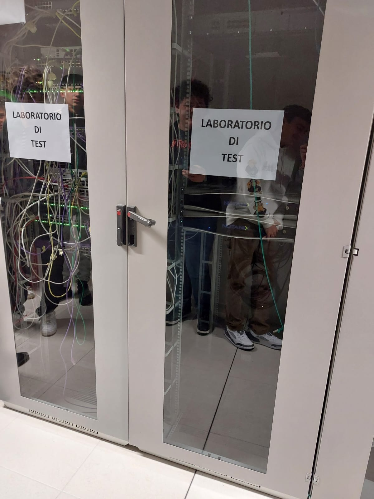

Cos'è
Mead Informatica è un'azienda italiana fondata nel 1994 con sede principale a Reggio Emilia e filiali a Casier (TV), Agrate Brianza (MB) e Roma. Con oltre 150 dipendenti, di cui il 70% con profilo tecnico, Mead si propone come un System Integrator nel settore ICT, offrendo soluzioni integrate e servizi tecnologici per aziende pubbliche e private.
Mead si distingue per una vasta gamma di servizi, tra cui:
- Cybersecurity
- Networking
- Data Center
- Unified Communication
- Sviluppo software
- Governance, Risk & Compliance
- Supporto tecnico
L'incontro
Per iniziare, l’azienda Mead Informatica ha presentato brevemente le proprie attività, spiegando di essere un system integrator che offre soluzioni e servizi IT avanzati, tra cui: cybersecurity, networking, data center e sviluppo software per aziende pubbliche e private.

Dopo un’introduzione teorica sui dispositivi di rete, ho avuto l’opportunità di visitare la loro dataroom, dove ci è stata illustrata la funzione di ogni dispositivo presente nei rack. Come attività laboratoriale, ogni gruppo doveva collegare il proprio computer a uno switch, che a sua volta era connesso a un firewall e a un server. In questo contesto, ho svolto un esercizio pratico per comprendere meglio il funzionamento del firewall.
Nella seconda attività, ho configurato un indirizzo IP statico sul computer, che fungeva da “numero di telefono” identificativo. Scambiandoci gli IP tra gruppi, siamo riusciti a effettuare chiamate tra i diversi computer. Ho poi utilizzato un software per registrare prima una chiamata non criptata, poi una criptata, osservando in questo modo le differenze tra le due tipologie di comunicazione.
Per l’ultima attività, abbiamo acceduto a delle macchine virtuali installate sui server e, una volta effettuato l’accesso, ho creato una semplice pagina HTML da caricare sul server. Una volta pubblicata, la pagina era visibile da tutti i dispositivi collegati allo switch, simulando così, in scala ridotta, il funzionamento di una pagina web.
Commento
Competenze attivate
Trasversali
- Competenza personale, sociale, e capacità di imparare ad imparare
- Competenza alfabetica funzionale
- Competenza multilinguistica
- Competenza matematica e in scienze, tecnologia e ingegneria
- Competenza digitale
Specifiche
- Conduzione di test di componenti e sistemi ICT
- Progettazione delle specifiche funzionali partendo dai requisiti definiti rilevando le esigenze del cliente
- Definizione della strategia aziendale sull’Information Security
In generale, l'incontro mi è piaciuto: l'ho trovato interessante e, in alcuni momenti, anche coinvolgente. Avevo aspettative piuttosto alte e, sotto certi aspetti, sono rimasto un po’ deluso.
Le parti che ho trovato più stimolanti sono state sicuramente la visita alla dataroom e l’attività della chiamata tra gruppi, che mi hanno permesso di vedere e sperimentare in modo pratico alcuni concetti. Al contrario, gran parte degli altri interventi erano molto teorici e, avendo una base scolastica ancora limitata su certi argomenti, ho faticato a seguirli e comprenderli pienamente. In particolare, la parte sui firewall mi è risultata troppo tecnica e avanzata rispetto alle mie conoscenze attuali, così come altri contenuti affrontati durante l'incontro.